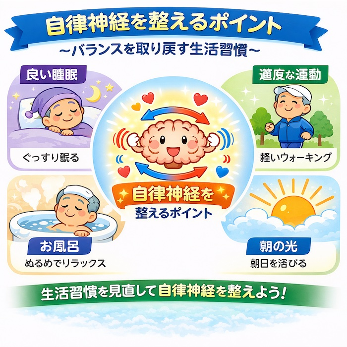

公開日：2026年6月｜最終更新：2026年8月
「最近、疲れやすい」「暑さ寒さに弱くなった」
このような変化を感じることはありませんか？
その原因の一つが、自律神経のパワーの低下です。
※本ページでは「自律神経パワー」を「自律神経の働き」という意味で使用しています。
「生活習慣」と「食事の改善」により、そのパワーを維持しましょう。
第１章 自律神経とは
自律神経は、体を自動的に調整する神経です。
活動時に働く「交感神経」と、休息時に働く「副交感神経」がバランスを取りながら、
「体温」・「血圧」・「内臓」の働きなどをコントロールしています。
交感神経
（活動モード）
・心拍数↑
・血圧↑
・体温↑
⇄
副交感神経
（休息モード）
・心拍数↓
・血圧↓
・消化促進
この2つがバランスを取りながら体を調整しています
第２章 なぜ自律神経パワーは低下するのか
主な原因
- 加齢により神経の反応が鈍くなる
- 生活リズムの乱れ（外出減少・活動量低下）
- 筋力低下や血流の低下
年齢とともに、体の「調整力」はゆっくり低下していきます。
その結果、環境の変化に対応しにくくなります。
加齢による自律神経の変化
若い頃
✔ 切り替えが速い
✔ 環境変化に強い
✔ 体温調節がスムーズ
高齢者
✔ 切り替えが遅い
✔ 寒暖差に弱い
✔ 血圧変動が大きい
第３章 どのような症状が起こるのか
- めまい・立ちくらみ
- 冷え・ほてり
- 不眠
- だるさ・疲れやすさ
- 便秘・下痢
- 動悸
これらは病気とまでは言えなくても、生活の質を下げる原因になります。
第４章 自律神経パワーを整える方法
(1) 生活習慣
- 朝起きたら日光を浴びる
- 毎日同じ時間に起床・就寝する
- 軽い運動（散歩など）を習慣にする
- ぬるめのお風呂でリラックスする

コラム：自律神経と睡眠
自律神経は、
「睡眠」と深く関係しています。
夜になると副交感神経が優位になり、体は休息モードに入ります。
しかし、高齢になるとこの切り替えがうまくいかなくなり、「寝つきが悪い」「途中で目が覚める」といった症状が出やすくなります。
- 毎日同じ時間に寝る・起きる
- 寝る前の強い光（スマートフォンなど）を避ける
これだけでも自律神経は整いやすくなります。
コラム：自律神経と運動
「軽い運動」は、自律神経を整える大きな助けになります。
特にウォーキングなどの有酸素運動は、
血流を改善し、神経の働きを安定させます。
- 1日15〜30分の散歩
- 無理のない範囲で継続することが大切
激しい運動よりも
「続けること」が重要です。
コラム：自律神経と入浴
「入浴」は、自律神経を整える非常に有効な習慣です。
ぬるめのお湯（38〜40℃）にゆっくり浸かることで、
副交感神経が優位になり、リラックスできます。
- ぬるめのお湯で10〜15分
- 急な温度変化（ヒートショック）に注意
特に冬場は、脱衣所や浴室を暖めることが大切です。
コラム：朝の光と自律神経（かなり重要）
「朝の光」は、自律神経を整える重要なスイッチです。
起床後に太陽の光を浴びることで、
「体内時計がリセット」され、
交感神経が適切に働き始めます。
この習慣だけでも、睡眠や体調の改善が期待できます。
(2) 食事
- たんぱく質（肉・魚・卵・大豆製品）
- ビタミンB群（神経の働きを助ける）
- マグネシウム（神経の安定に関与）
- 野菜やナッツ類をバランスよく摂取
コラム：自律神経が乱れやすい季節
自律神経は、季節の影響を強く受けます。
- 夏：暑さによる体温調節の負担
- 冬：寒暖差による血圧変動（ヒートショック）
特に高齢者は変化への適応が遅れるため、注意が必要です。
第５章 まとめ
自律神経パワーの低下は、加齢による自然な変化です。
しかし、生活習慣や食事を整えることで、その働きを支えることは可能です。
毎日の小さな積み重ねが、体調の安定につながります。
ちょっと専門的（読み飛ばしてください）
コラム：なぜ自律神経は加齢で弱くなるのか
自律神経の働きは、脳（特に視床下部）と全身の神経・血管によって調整されています。
加齢により、以下の変化が起こります。
- 神経伝達の低下：神経の反応速度が遅くなる
- 血管の硬化：血圧調整機能が低下する
- 受容体の感受性低下：刺激に対する反応が鈍くなる
その結果、体温・血圧・心拍などの調整が不安定になります。
特に高齢者では、急な立ち上がり時の血圧低下（起立性低血圧）や、
寒暖差による血圧変動が起こりやすくなります。
これは病気ではなく、加齢に伴う「調整力の低下」と考えられますが、上で、ご紹介した
生活習慣によってある程度の改善が期待できます。
参考論文・情報
- 厚生労働省 e-ヘルスネット
- 日本自律神経学会編：「自律神経」誌（総説）
- 榊原隆次ほか：「高齢者の自律神経障害と脳疾患」自律神経 59巻3号（2022）
- 柴崎孝二：「フレイルと自律神経機能」診断と治療 108巻3号（2020）
- 日本老年医学会雑誌：加齢と自律神経機能に関する研究
※本ページは公的機関および学会の情報などをもとに作成しています。